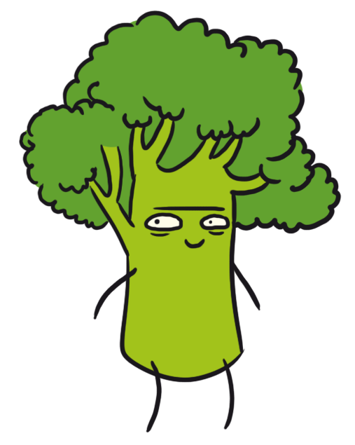

About
Young and old people prepare for the holiday in advance.
There are many New Year traditions.
Some people try to make a wish when it is time of chimes.
Most of them watch TV and listen to their president’s speech.
There are many New Year traditions.
Some people try to make a wish when it is time of chimes.
Most of them watch TV and listen to their president’s speech.
- Everyone can choose a suitable type of holidays.There are many New Year traditions.
- There are many New Year traditions.
- A successful leave has a positive effect on the people over the course of a year.
- The vacation has to give people a chance to fully recover from the previous activity during the year.
- It is especially pleasant for the people to spend their vacation where they are in harmony with themselves.
- Everyone can choose a suitable type of holidays.There are many New Year traditions.
There are many New Year traditions.
The vacation has to give people a chance to fully recover
from the previous activity during the year.
It is especially pleasant for the people to spend their
vacation where they are in harmony with themselves.
Parents prepare gifts for their children. And they are happy to see their kids’ joy and merry exclamations. Someone waits for fashionable
computer game or another expensive present. And some children are happy to get only chocolate figures, a few mandarins and crunchy biscuits.
Young people like to exchange gifts secretly. It means that nobody knows who prepared a present and for whom.
And of course, everybody love New Year because after that there are a lot of days when adults can have a rest. Children have winter holidays.
It means that all the family can be together. All of us have kept these days in our memories since the childhood,
when we with delighted eyes shared these unique moments of December magic
Parents prepare gifts for their children. And they are happy to see their kids’ joy and merry exclamations. Someone waits for fashionable computer game or another expensive present. And some children are happy to get only chocolate figures, a few mandarins and crunchy biscuits. Young people like to exchange gifts secretly. It means that nobody knows who prepared a present and for whom. And of course, everybody love New Year because after that there are a lot of days when adults can have a rest. Children have winter holidays. It means that all the family can be together. All of us have kept these days in our memories since the childhood, when we with delighted eyes shared these unique moments of December magic
EVERYONE CAN CHOOSE
- Everyone can choose a suitable type of holidays.There are many New Year traditions.
- There are many New Year traditions.
- A successful leave has a positive effect on the people over the course of a year.
- The vacation has to give people a chance to fully recover from the previous activity during the year.
- It is especially pleasant for the people to spend their vacation where they are in harmony with themselves.
- Everyone can choose a suitable type of holidays.There are many New Year traditions.
"Young and old people prepare for the holiday in advance. There are many New Year traditions. Some people try to make a wish when it is time of chimes. Most of them watch TV and listen to their president’s speech."